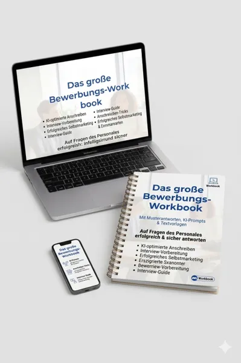
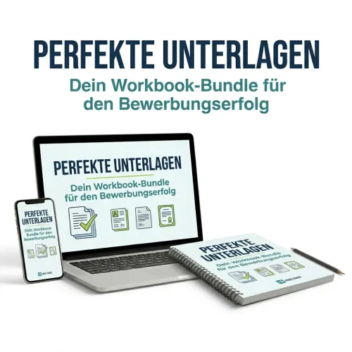
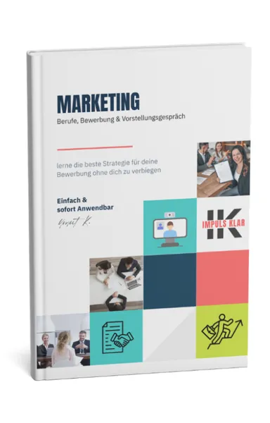

Der Interview-Kompass für das Vorstellungsgespräch
Produktprofil · Marktplatz-Daten 2026-10-14 · Verkaufsseiten-Recherche 2026-10-14 · Kategorien: Profession & Job, Marketing Services
- Der Interview-Kompass für das Vorstellungsgespräch ist ein/e E-Book in Profession & Job und Marketing Services, vertrieben über den Digistore24-Marktplatz von Anbieter Diveco, gelistet seit 2026-02-20.
- Listenpreis $10.35; Digistore24 meldet — Checkout-Konversion, — Stornierungsquote und 50 % Affiliate-Provision.
- Verdienst pro Verkauf (Affiliate): $5.18 (Anbieter-seitige Statistik, keine Prognose).
Interesse an Der Interview-Kompass für das Vorstellungsgespräch? Aktueller Preis, Boni und Garantiebedingungen finden Sie auf der offiziellen Seite des Anbieters:
Offizielle Verkaufsseite ansehen
Affiliate-Link (Werbung) — wir verdienen ggf. eine Provision, ohne Mehrkosten für Sie.
Marktplatz-Daten
| Produkttyp | E-Book |
|---|---|
| Preis | $10.35 (Single payment) |
| Affiliate-Provision | 50 % |
| Garantie/Rückgabe | Laut Verkaufsseite des Anbieters — vor dem Kauf auf der offiziellen Seite prüfen |
| Anbieter | Diveco (gelistet seit 2026-02-20) |
| Marktplatz-Statistiken* | Checkout-Konversion — · Stornoquote — · Verdienst/Verkauf $5.18 |
* Anbieter-seitige Statistiken von Digistore24; sie hängen von der Traffic-Qualität ab und sind keine Prognose.
Marktplatz-Beschreibung des Anbieters
„Sichere dir jetzt deinen Vorsprung!“ Bereite dich mit dem Wissen erfahrener HR-Profis vor. Schluss mit der Unsicherheit – starte deine Karriere-Optimierung für nur 9,90 € . Sofort-Download: Direkt nach dem Kauf als PDF verfügbar. KI-Ready: Inklusive Copy & Paste Prompts für deine Vorbereitung. Praxisnah: 64 Fragen, die dich wirklich weiterbringen. Jetzt bestellen und entspannt zum Traumjob! Verwandle Lampenfieber in Souveränität – mit der Power der KI. Kennst du das beklemmende Gefühl vor einem Vorstellungsgespräch? Die Sorge, bei einer Fangfrage ins Stocken zu geraten oder sich unter Wert zu verkaufen, betrifft Bewerber jeder Altersgruppe. Unser Workbook ist dein strategischer Begleiter, um genau diese Hürden zu meistern. Was dich im Workbook erwartet: Wir haben die 64 entscheidenden Fragen aus der HR-Praxis analysiert und für dich aufbereitet: 1️⃣ Gesprächseinstieg & Motivation: Meistere den Pitch zu deiner Person und begründe deinen Wechselwunsch professionell (Fragen 1–14). 2️⃣ Selbsteinschätzung: Präsentiere deine Stärken und gehe reflektiert mit Schwächen um (Fragen 15–29). 3️⃣ Arbeitsstil & Team: Zeige, wie du Herausforderungen löst und dich im Team organisierst (Fragen 30–40). 4️⃣ Charakter & Werte: Überzeuge durch Integrität und eine starke Persönlichkeit (Fragen 41–52). 5️⃣ Spontanität & Stress: Bleibe ruhig bei Schätzfragen und kreativen „Out-of-the-box“-Rätseln (Fragen 53–64). Dein strategischer Vorteil: Der KI-Turbo Jede Frage enthält einen maßgeschneiderten KI-Prompt . Kopiere diese einfach in ChatGPT oder Gemini, um: Individuelle Antwortformulierungen basierend auf deinem Lebenslauf zu erhalten. Eigene Kündigungsgründe neutral und positiv zu verpacken. Einen 30-60-90-Tage-Plan für deine neue Stelle zu entwerfen. Der Aha-Moment: Du lernst nicht nur, was du sagen sollst, sondern verstehst die Motivation des Personalers hinter jeder Frage. Wenn du weißt, dass die Frage nach Fehlern eigentlich deine Fehlerkultur prüft, antwortest du sofort sicherer. E-Book - PDF-Dokument Auslieferung: digital per Download, E-Mail nach Kauf
Von der Verkaufsseite des Anbieters
Seitentitel: workbook-BewerberWorkbook - Der Interview-Kompass - Landingpage | heinzbader
Hauptüberschrift
workbook-BewerberWorkbook - Der Interview-Kompass - Landingpage
Ihr letztes Interview vor der Zusage. Gehen Sie vorbereitet hinein.
Abschnitts-Überschriften
- Was verändert dieses Workbook?
- Das erwartet Sie im Interview-Kompass
- Erfolgreich interviewen & rekrutieren
- Passend für jede Situation im Bewerbungsprozess
- Echte Ergebnisse. Echte Menschen.
- Bewerben ist kein Bittgesuch. Es ist professionelles Marketing in eigener Sache.
- Was Sie vielleicht noch wissen möchten
- Der Interview-Kompass
- Gehen Sie vorbereitet in Ihr letztes Interview vor der Zusage.
Einstiegstext
64 kritische Personalerfragen mit Motivation, Musterantwort und fertigem KI-Prompt – für Ihr letztes Interview vor der Zusage.
Das Problem ist häufig nicht Ihre Qualifikation. Sondern die Art, wie Sie sich präsentieren.
Automatische Bewerbungsfilter, austauschbare Floskeln und ein fehlender roter Faden entscheiden heute oft vor jedem menschlichen Blick.
Das letzte Interview vor der Zusage entscheidet oft am meisten – und lässt sich am gezieltesten vorbereiten. Mit den richtigen Fragen im Kopf gehen Sie souverän statt überrascht hinein.
CTA-Buttons: „Startseite"
Recherche-Methode: rohes HTML · 890 Wörter · Qualität: rich · recherchiert am 2026-10-14. Vollständige Recherche-Datei (MD) ↗
Wie Produkte dieser Art geliefert werden
Allgemeiner Hinweis zu diesem Produkttyp (keine anbieterspezifische Anleitung): E-Books auf Digistore24 werden als digitaler Download geliefert (meist PDF/EPUB): direkt nach dem Checkout erhalten Sie einen Downloadlink oder Mitgliederzugang und können auf jedem Gerät lesen. Für die genaue Anwendung von Der Interview-Kompass für das Vorstellungsgespräch sind die offizielle Verkaufsseite und die enthaltenen Materialien maßgeblich.
Gut zu wissen
- Keine Garantie-Formulierung in unserer Recherche gefunden — bestätigen Sie das Rückgabefenster auf der offiziellen Seite, bevor Sie kaufen.
- Marktplatz-Zahlen (Preis, Provision, Konversion, Stornoquote) — Quelle: offizielle Digistore24-Marktplatz-API (Affiliate-Sicht), Stand 2026-10-14. Gegenprüfung: Marktplatz-Suche nach Produkt-ID 670242.
- Verkaufsseiten-Zitate — Quelle: https://heinzbader.com/workbook-der-interview-kompass-landingpage/, abgerufen 2026-10-14 (Methode: rohes HTML). Verify: offizielle Seite öffnen.
- Garantie / Rückgabe — vom Anbieter festgelegt; vor dem Kauf auf der Verkaufsseite bestätigen.
- Nicht von uns geprüft: Produktqualität, Ergebnisse, Testimonials — kein Praxistest für dieses Listing durchgeführt.
Häufige Fragen zu Der Interview-Kompass für das Vorstellungsgespräch
Antworten aus dem Marktplatz-Snapshot (2026-10-14) und der Verkaufsseiten-Recherche (2026-10-14); Anbieteraussagen sind inline gekennzeichnet.
Was ist Der Interview-Kompass für das Vorstellungsgespräch?
Der Interview-Kompass für das Vorstellungsgespräch ist ein Angebot des Typs „E-Book" im Digistore24-Marktplatz, Anbieter: Diveco, gelistet seit 2026-02-20. Eingepflegt unter Beruf & Karriere und Marketing-Dienstleistungen. Digistore24 wickelt Checkout, Lieferung und Rückgaben ab.
Wie viel kostet Der Interview-Kompass für das Vorstellungsgespräch?
Der Digistore24-Marktplatz listet es für $10.35 (single payment). Preise legt der Anbieter fest und können sich ändern — der Marktplatz-Eintrag oben zeigt den Schnappschuss; die offizielle Verkaufsseite zeigt den aktuellen Preis.
Gibt es eine Geld-zurück-Garantie für Der Interview-Kompass für das Vorstellungsgespräch?
Unsere Verkaufsseiten-Recherche hat keine explizite Garantie-Formulierung gefunden. Viele Digistore24-Produkte bieten 60 Tage Geld-zurück, aber das legt jeder Anbieter selbst fest — bestätigen Sie es auf der offiziellen Verkaufsseite, bevor Sie kaufen.
Ist Der Interview-Kompass für das Vorstellungsgespräch seriös?
Wir bewerten keine Seriosität — wir veröffentlichen überprüfbare Zahlen: Anbieter Diveco (gelistet seit 2026-02-20), Checkout-Konversion —, Stornoquote —, Affiliate-Verdienst/Verkauf $5.18 (alles Anbieter-seitige Marktplatz-Statistiken). Lesen Sie unsere 6-Punkte-Bewertungsmethode und entscheiden Sie anhand der Zahlen — oder diskutieren Sie Der Interview-Kompass für das Vorstellungsgespräch auf GitHub.
Wo kann ich Der Interview-Kompass für das Vorstellungsgespräch sicher kaufen?
Nur über die offizielle Verkaufsseite, die auf dieser Seite verlinkt ist (Checkout und Rückgaben laufen über Digistore24). Prüfen Sie dort Preis und Garantie vor der Bestellung. Der Link ist ein Affiliate-Link — der Kauf unterstützt diese Website ohne Mehrkosten für Sie.
Wie erhalte ich Der Interview-Kompass für das Vorstellungsgespräch nach der Zahlung?
Der Checkout läuft über Digistore24: Nach der Zahlung erhalten Sie Ihren Zugang oder Download per E-Mail und in Ihrem Digistore24-Kundenkonto. Lieferdetails für diesen Produkttyp: E-Books auf Digistore24 werden als digitaler Download geliefert (meist PDF/EPUB): direkt nach dem Checkout erhalten Sie einen Downloadlink oder Mitgliederzugang und können auf jedem Gerät lesen. Bei Problemen kann der Digistore24-Käufersupport Ihre Bestellung wiederherstellen.
Alle 50 Käuferfragen zu Beruf & Karriere — das komplette Kategorie-FAQ.
Der Interview-Kompass für das Vorstellungsgespräch auf Reddit diskutieren
In Community-Threads vergleichen echte Käufer Erfahrungen. Wir verlinken Communities, keine einzelnen Posts — Threads verschwinden, Subreddits bleiben:
- r/Unternehme — deutschsprachige Community mit Diskussionen zu profession & job.
- r/Vertrieb — deutschsprachige Community mit Diskussionen zu profession & job.
- Reddit-Suche nach „Der Interview-Kompass für das Vorstellungsgespräch" — Live-Ergebnisse, von uns nicht beeinflusst.
- Top-„Erfahrungs"-Treffer dieses Jahr — selbst nach Aktualität filtern.
Passendes auf Amazon.de
Physische Produkte und Zubehör, die häufig zusammen mit Der Interview-Kompass für das Vorstellungsgespräch gekauft werden:
- Marketing Bücher auf Amazon.de — Top-Ergebnisse, Amazon-Ranking.
- Bestseller: Marketing Bücher — live Liste von Amazon, von uns nicht kuratiert.
Werbung: Als Amazon-Partner verdient DigistorePicks DE an qualifizierten Käufen (Partner-tag adminstorede-21). Amazon setzt eigene Preise und Provisionen (niedrige einstellige Prozente — weit unter den 30–75% der Digistore24-Anbieter). Amazon ist ein Convenience-Angebot für Sachprodukte, kein Ersatz für das digitale Produkt oben.
Ähnliche Angebote in Beruf & Karriere

ZUGRIFF FÜR ALLE! Jede Person, die ein Arbeitsverhältnis mit Ihnen als Schulgemeinde hat sowie eine E-Mail-Adresse von Ihrer Schule, hat die Zufriffsberechtigun

MATRIXPRINZIP – High-Ticket-Produkt mit bis zu 820,56€ Provision pro Verkauf! Mindset, emotionale Intelligenz und finanzielle Intelligenz – genau die Fähigkeite

Tägliches (!) ELITE VIP Erfolgs-Coaching per Video mit Helmut Ament 365 Videos - Weltweit einzigartig (!) 365 Tage ein weltweit einzigartiges Erfolgs-Coaching!

Die RS Piano-Akademie bietet umfassende und interaktive Klavierkurse, die vom Anfänger- bis zum Fortgeschrittenenniveau reichen. Diese Kurse wurden entwickelt,
Weitere Angebote von Diveco
Gesamtes Sortiment: Diveco Anbieter-Hub — alle Listings mit Marktplatz-Daten.

Dein Traumjob passt perfekt zu dir – aber deine Bewerbung kriegt nur Absagen? Aha-Moment: Wusstest du, dass Recruiter im Schnitt nur 6 Sekunden für den ersten B

PRODUKTNAME: Workbook-Bundle „Unterlagen-Check" ZIELGRUPPE: Berufseinsteiger, Jobwechsler, erfahrene Fachkräfte nach Bewerbungspause – jeder im aktuellen o

Die 3 sofort umsetzbaren Lösungen für Deinen Erfolg: 1. SOFORT-LÖSUNG: KI-Prompts zum Kopieren & Einfügen Du bekommst alle fertig formulierten Prompts, um K

Das moderne Bewerbungshandbuch - Workbook - Anschreiben und KI Was macht dieses Workbook einzigartig? Wir kombinieren klassische Bewerbungsgrundlagen mit modern
Der Interview-Kompass für das Vorstellungsgespräch ist auch gelistet in
Marketing-Dienstleistungen (287 Produkte)
Ähnliche Preislage in Beruf & Karriere

Viele Menschen leiden unter Stress und psychischen Belastungen. Dies bedeutet ein großes Gesundheitsrisiko. Die meisten Angebote zur Stressbewältigung und Resil

ebook 66 Tage Zeitmanagement Challenge Für wen ist dieses ebook interessant? Für alle, die sich mit dem Thema Zeitmanagement / Selbstmanagement befassen möchten
„Der Schäferhund – Ein Begleiter fürs Leben“ ist ein praxisnaher Ratgeber für alle Liebhaber des Deutschen Schäferhundes. Das Buch begleitet Sie von der Auswahl

EBook Praxisleitfaden: Erfolgreich bewerben im Marketing Der Bewerbungsprozess im Marketing und für digitale Berufe folgt eigenen Regeln. Neben Fachwissen und P
Ähnliche Suchanfragen
Wo Sie es sich ansehen können
Wo Sie es sich ansehen können
Aktuelle Preise, Garantie und Boni finden Sie auf der offiziellen Verkaufsseite:
Offizielle Verkaufsseite ansehen
Das ist ein Affiliate-Link (Werbung) — kaufen Sie darüber, verdienen wir ggf. eine Provision, ohne Mehrkosten für Sie.
Quellen & weiterführende Informationen
- Offizielle Verkaufsseite (aktueller Preis, Garantie, Boni): heinzbader.com/workbook-der-interview-kompass-landingpage/ (Affiliate-Link)
- Öffentliche Digistore24-Produktseite: checkout-ds24.com/product/670242
- Vollständige Recherche-Datei (Markdown, versioniert): content/products/55664-der-interview-kompass-f-r-das-vorstellungsgespr-ch.md
- Affiliate-Supportseite des Anbieters: heinzbader.com/affiliate-support-seite-der-interviewkompass/
- Marktplatz-Kategorie: Beruf & Karriere
Wie wir Produkte wie Der Interview-Kompass für das Vorstellungsgespräch bewerten
Sechs Prüfungen, ausschließlich mit offiziellen Marktplatz-Zahlen. Die vollständige Bewertungsmethode lesen · unsere Recherche-Standards & Kennzeichnung.
Fragen oder eigene Erfahrungen mit Der Interview-Kompass für das Vorstellungsgespräch?
Praxis-Tests veröffentlichen wir erst, nachdem wir ein Produkt selbst gekauft haben — aber Ihre Erfahrung hilft anderen Lesern: Diskussion zu Der Interview-Kompass für das Vorstellungsgespräch auf GitHub starten/verfolgen. Falsche Zahl gefunden? Korrektur melden — jede Seite zeigt ihre Datenstände, Korrekturen gelten für die ganze Website.